01
AI Clothing Recognition
Upload a photo of any clothing item and receive visually similar sustainable alternatives within seconds.
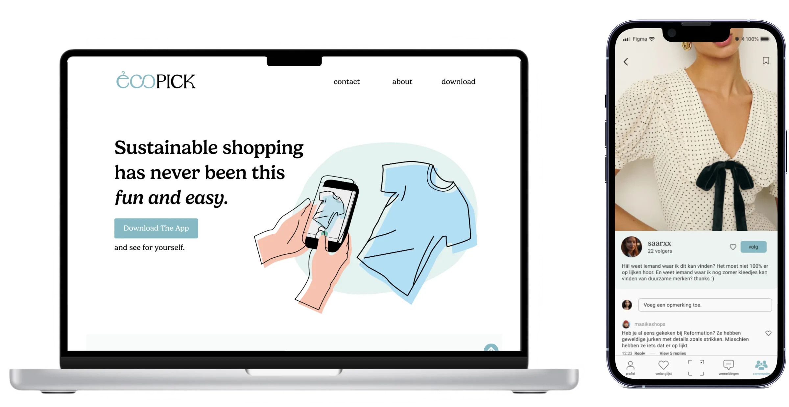
Ecopick
Sustainable fashion is becoming increasingly important to consumers, yet many people struggle to find clothing that aligns with both their style and their values. EcoPick was developed as a concept that bridges this gap by using AI image recognition to identify clothing items and instantly suggest sustainable alternatives from ethical brands and second-hand platforms.
Consumers often want to make more sustainable fashion choices but struggle to find affordable and stylish alternatives that match their preferences. As a result, many continue purchasing from fast-fashion brands despite their environmental concerns. Existing solutions require extensive searching and lack personalization, making sustainable shopping feel inconvenient and inaccessible.
Users didn't need more information about sustainability. They needed a faster way to discover sustainable alternatives that matched products they already wanted to buy.
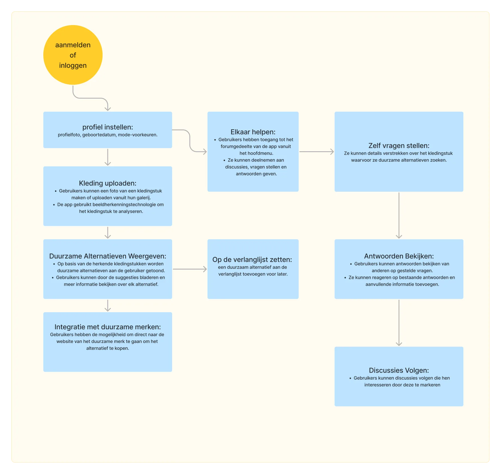
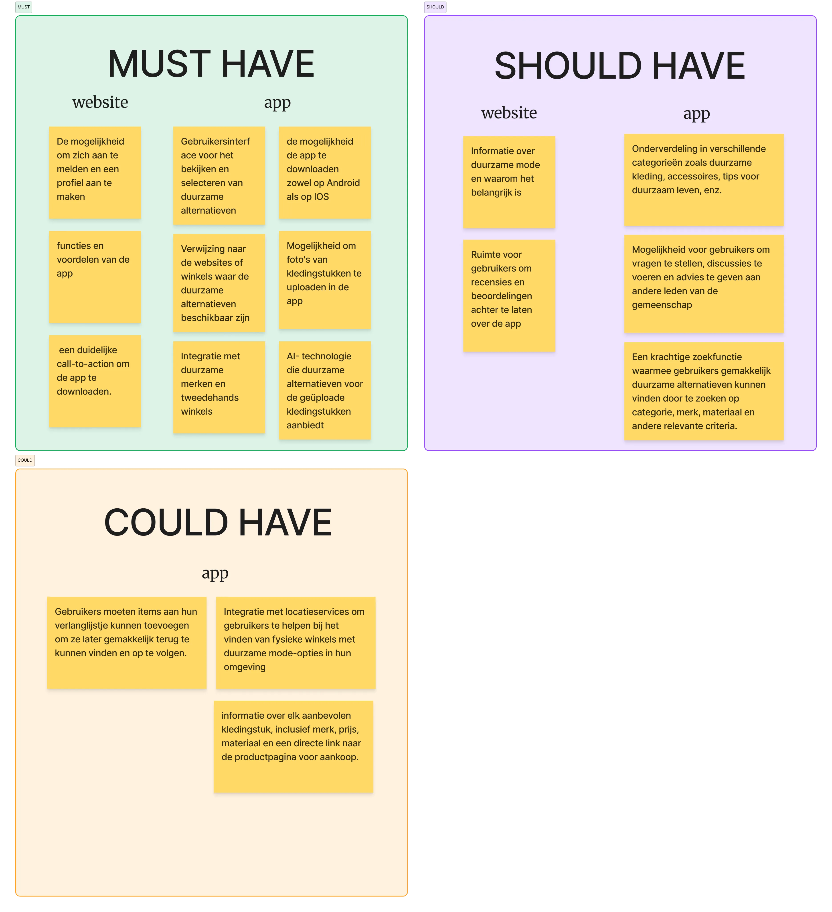
Based on the research insights, the concept was built around three principles:
Sustainable shopping should feel as effortless as traditional online shopping. The goal was to remove the friction from it by replacing manual searching with a simple image-based workflow.
By focusing on familiarity instead of education, the platform lowers the barrier to making more sustainable purchasing decisions.
Upload a photo of any clothing item and receive visually similar sustainable alternatives within seconds.
Suggestions are tailored to the user's style preferences, making sustainable shopping more relevant and accessible.
Explore products from ethical brands and second-hand platforms through a single interface.
Users can share recommendations, ask for advice, and help each other discover sustainable fashion options.
The wireframes focused on simplifying the experience into a few clear steps: upload an image, review AI-generated matches, apply filters, and explore recommended alternatives.
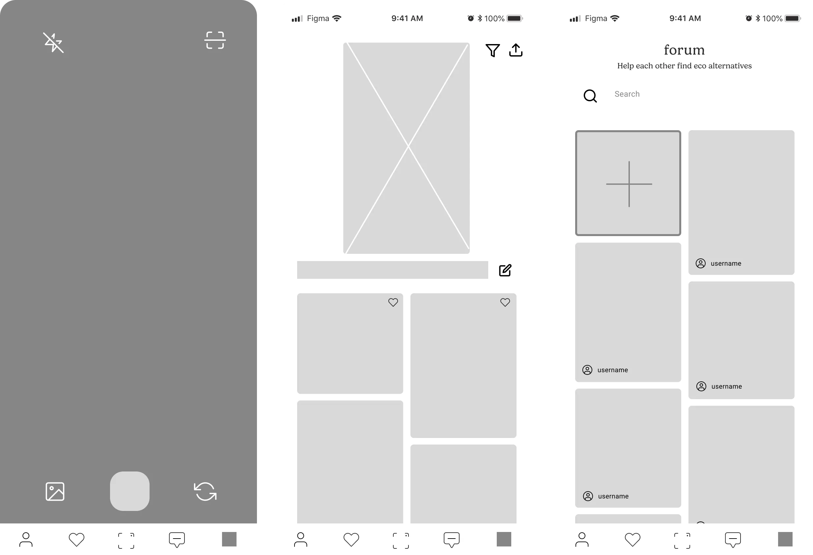
The visual identity combines clean interfaces with natural colors inspired by sustainability, fashion, and conscious consumption.
The design emphasizes product imagery and discovery while maintaining a modern and approachable aesthetic.
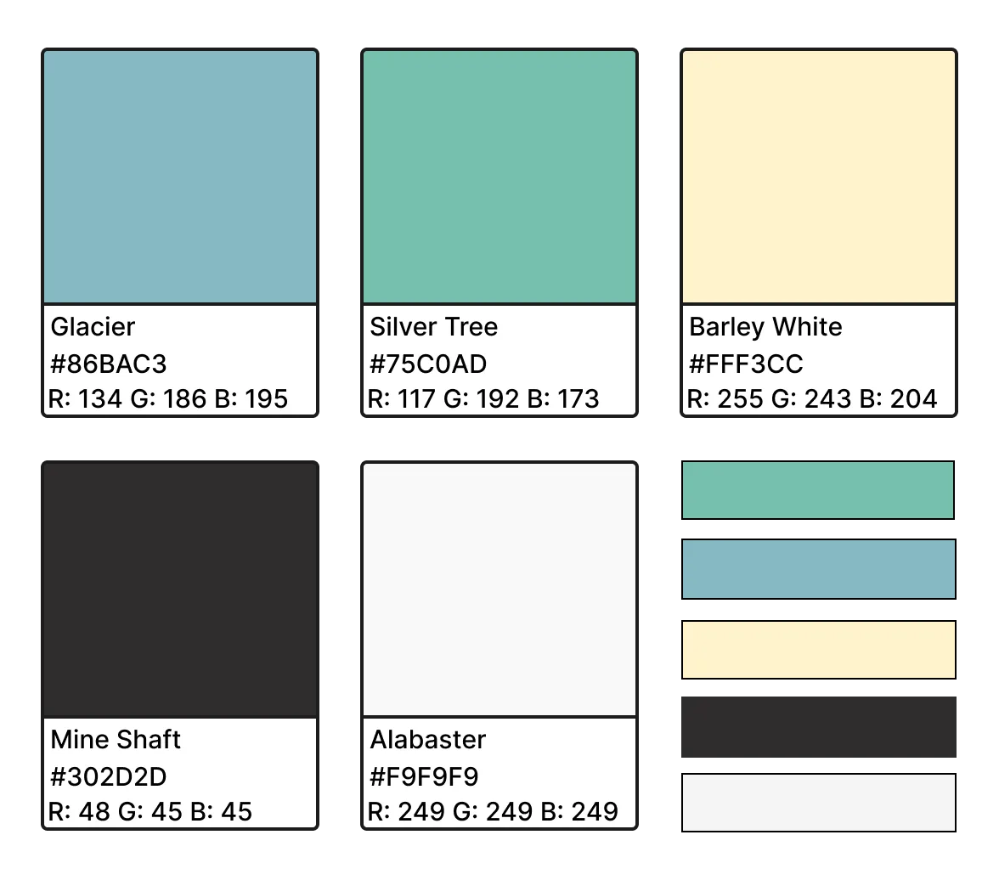
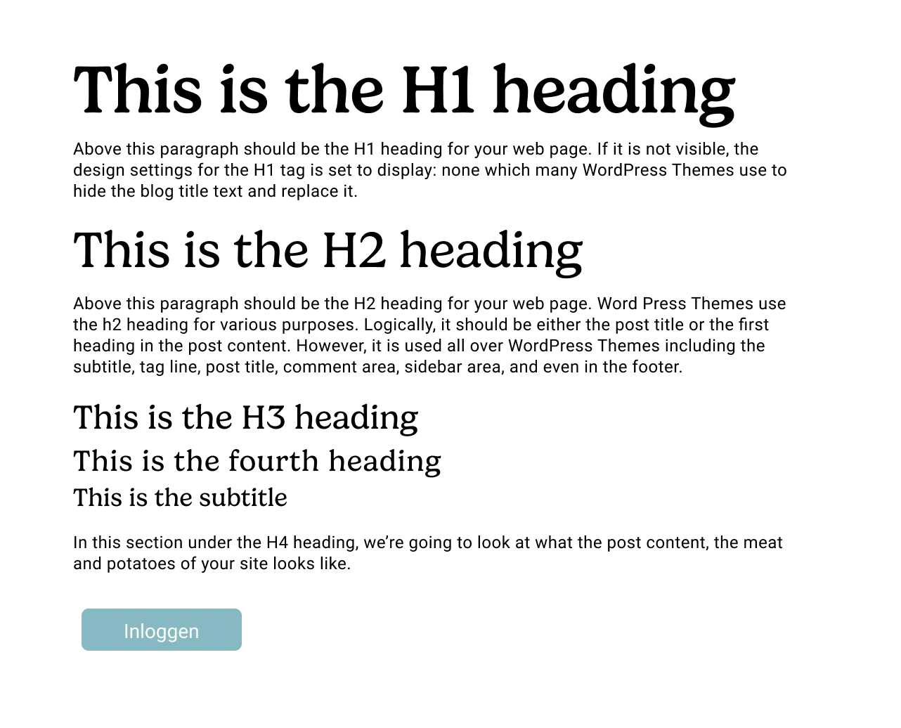
The final concept transforms sustainable fashion discovery into a simple and intuitive experience. By combining AI-powered image recognition, personalized recommendations, and community-driven insights, EcoPick helps users bridge the gap between wanting to shop sustainably and actually doing so.
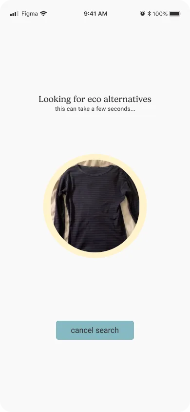
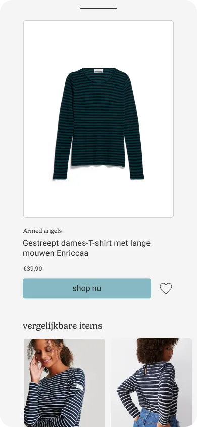
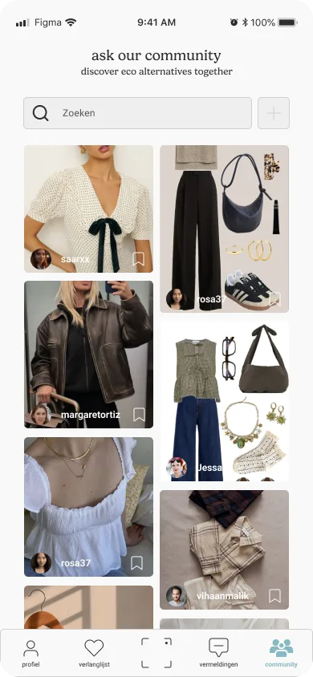
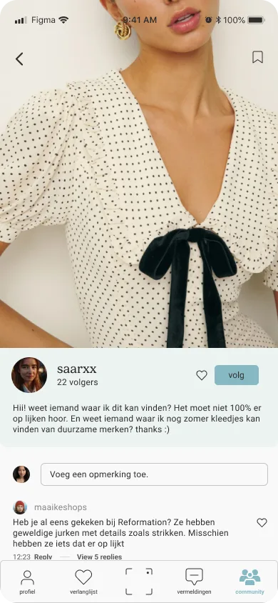
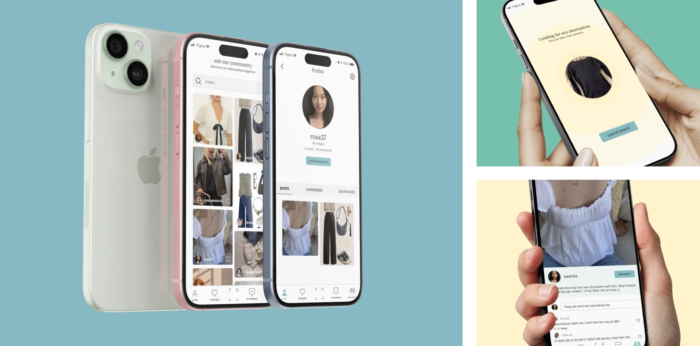
Special Olympics